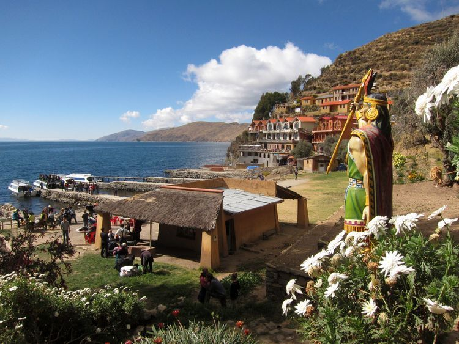
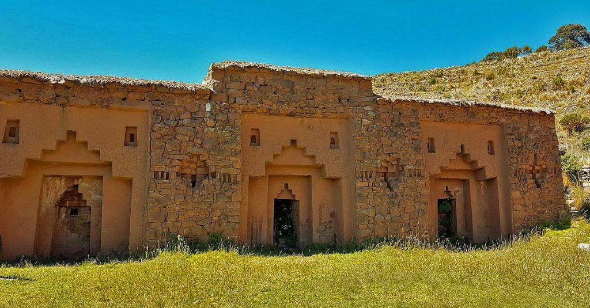
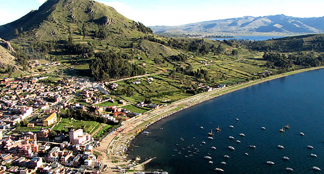
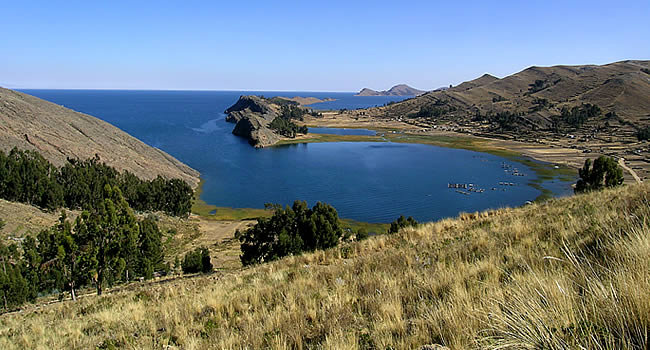
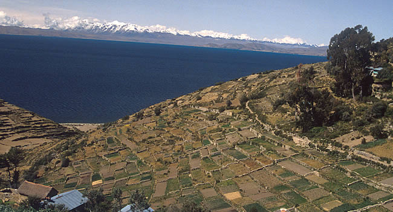

El cerro El Calvario está ubicado en una colina, que está en medio de la ciudad de Copacabana al oeste de Bolivia, a orillas del Lago Titicaca”.

La Isla del Sol es una isla boliviana en el lago Titicaca. Decenas de caminos la atraviesan y es famosa por sus sitios de origen Inca, como Pilko Kaina, con su palacio en ruinas.

La Isla de la Luna, también llamada Isla Koati, es una isla de Bolivia que se encuentra en el lago Titicaca, junto a la isla del Sol en el departamento de La Paz. Es una isla pequeña y cuenta con una superficie de 105 hectáreas.

Esta bahía ubicada a orillas del lago, es un lugar de recreación donde predominan los paseos en barcos a remo, kayak y embarcaciones pequeñas con figuras decorativas. También es posible encontrar por determinados periodos de tiempo alquiler de bicicletas, motos o caballos nativos.

Esta hermosa bahía se encuentra al noroeste de la ciudad de Copacabana, camino a Yampupata. La comunidad de la zona se dedica a la crianza de la trucha y a la pesca.

Sampaya, pueblo histórico y lleno de tradición, es testimonio vivo de una cultura que tiene sus raíces en tiempos remotos. A los pies del poblado se ven las islas del Sol y de la Luna, además del mágico espectáculo de los nevados andinos.